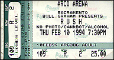
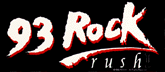

|
February 10, 1994 ARCO Arena. Sacramento, CA
 
The Sacramento Bee
Sound Problems Plague Rush Through the 20 years it's been recording and touring, the Canadian progressive hard rock trio Rush has been many things, musically and lyrically ambitious. But it has never been known for its sense of humor. But judging from its performance Thursday night at Arco Arena, perhaps the members are trying to loosen up a bit. Opening the show with a film projected on a stage-wide screen, the band lampooned the often-pompus openings of shows such as theirs with a terrific takeoff on "2001: A Space Odyssey." Using imagery from its latest album, "Counterparts," with "Thus Spake Zarathustra" on the sound system, a giant bolt swept through deep space for a rendezvous with -- a giant nut. OK, it was a juvenile double entendre, but it was a promising sign that the band doesn't take its grand gestures entirely seriously. In the same vein were other attempts at levity, as when the normally silent guitarist Alex Lifeson took the microphone to introduce the band members with their names juxtaposed, introducing himself as Alec Baldwin. On the other hand, given Lifeson's introductions and the band's somewhat goofy demeanor and other on-screen jokes, perhaps this was not progress. The biggest joke of the evening was the sound, which began dense and muddy, obscuring much of singer Geddy Lee's work, and grew only marginally clearer as the show went on. That was a pity, for, from what could be heard, the band's playing was crisp and tight. The band, also including drummer Neil Peart, was also using a sophisticated 3D sound that used two large speaker banks suspended far back in the hall to give the music added depth, and to separate sound effects from the onstage din. The only other band to use this technology has been Pink Floyd, but Rush didn't get nearly the same mileage out of it. The band did use visual effects and lighting to good effect, somewhat making up for the crude wall of sound coming from the stage. But all that aside, the music was what Rush fans have come to expect, with few surprises. Although known as "progressive" musically, the band's two-hour set showed that even going as far back as songs like "Limelight," "The Spirit Of Radio" and the lengthy closer, "Tom Sawyer," the songs have remained very much the same. Using tricky time signatures, complex riffs and involved song structures that are made accessible by Geddy Lee's melodic hooks, Rush has made hard rock the musical dexterity of '70s progressive rock. But its enjoyment is still dependent on whether one can tolerate Lee's squeaky, strained voice. Some other things have changed. Rush has always commanded a passionate, large following in Sacramento, but Thursday night the group drew only about 11,000 fans, considerably less than a sellout house, and far fewer that the two sold-out houses they played to on a previous visit to Sacramento. The band's hand-picked opening act, Seattle grunge godfathers the Melvins, was a stark contrast to Rush's crisp, complex hard rock. Sounding like Black Sabbath at half speed, the band was interesting -- for about five minutes. But the trio did what an opening act is supposed to do: Its dense aural sludge warmed up the crowd -- by the end of its set, many members of the crowd were booing passionately -- and made the headliners, by contrast, sound like paragons of clarity.
|